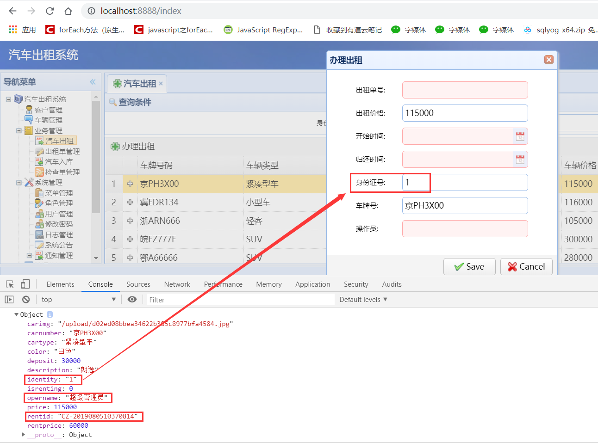
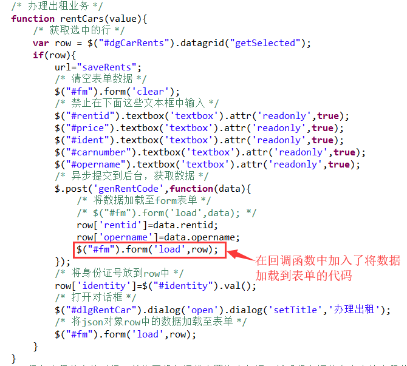

首先描述一下问题场景：我们正在做一个汽车出租项目，使用maven+ssm+easyui来完成，这个问题是在做汽车办理出租业务的时候出现的。
问题描述：在使用ajax发送异步请求时，遇到一个问题，就是在回调函数中接受到了异步响应的数据，但是在前端页面中的表单中却不回显该数据。
下面请看问题代码：
1 /* 办理出租业务 */
2 function rentCars(value){
3 /* 获取选中的行 */
4 var row = $("#dgCarRents").datagrid("getSelected");
5 if(row){
6 url="saveRents";
7 /* 清空表单数据 */
8 $("#fm").form('clear');
9 /* 禁止在下面这些文本框中输入 */
10 $("#rentid").textbox('textbox').attr('readonly',true);
11 $("#price").textbox('textbox').attr('readonly',true);
12 $("#ident").textbox('textbox').attr('readonly',true);
13 $("#carnumber").textbox('textbox').attr('readonly',true);
14 $("#opername").textbox('textbox').attr('readonly',true);
15 /* 异步提交到后台，获取数据 */
16 $.post('genRentCode',function(data){
17 /* 将数据加载至form表单 */
18 /* $("#fm").form('load',data); */
19 row['rentid']=data.rentid;
20 row['opername']=data.opername;
21 /* $("#fm").form('load',row); */
22 });
23 /* 将身份证号放到row中 */
24 row['identity']=$("#identity").val();
25 /* 打开对话框 */
26 $("#dlgRentCar").dialog('open').dialog('setTitle','办理出租');
27 /* 将json对象row中的数据加载至表单 */
28 $("#fm").form('load',row);
29 }
30 }请注意这里：
前端页面显示：

发现就只有identity所对应的数据显示了，而opername和rentid所对应的数据都没有显示，可是我明明已经在函数的最后一行将json对象row中的所有数据全部都加载到表单中了，但是表单为什么没有显示呢？带着这个问题，我试了一下老师的方法：
注意：这里直接将后台数据直接加载至表单时，异步响应回来的json对象data的键（key）值一定要与表单中文本框的name属性所对应的值一样，否则数据加载不到表单中。
前端页面：
rentid和opername全部都加载出来了。
问题解析：1.一开始，我的回调函数中，只有往json对象中赋值的语句；2.在回调函数中没有往表单中加载数据的代码；3.我发送的是异步请求，那也就是说，对话框中的表单，是在异步响应到达之前，将数据回显的。
得出结论：在异步响应到达之后（在这个案例中，异步响应是在 表单回显完数据之后 到达的），需要将数据再次加载到form表单中。
如果还不理解，那么除了上述写法之外还可以这样写：

这个方法也是可以的，看到了吧，老师是直接将异步响应回来的数据加载到表单的所以不会出现问题，而我居然想试图通过赋值的方法将数据加载到表单，但是却不在回调函数中加入将异步响应回来的数据加载至表单的代码，而是只有赋值到json对象的语句，虽然我在最后将异步响应回来的数据加载至表单，但是这样导致的结果就是：对话框中的表单只加载了非异步响应回来的数据，而异步响应回来的数据因为是异步的，所以在表单回显完数据之后，异步响应回来的数据才发送到前端，json对象row才接受到赋值，此时如果没有再次将数据加载至表单，那么表单中就会没有这异步响应回来的数据。
再次总结一下前端获取数据的过程：前端页面在 第一次加载数据的同时 发送异步请求，但是 这个 异步响应 是在 页面加载完数据之后 到达的，因此在 异步响应 到达之后（这时表单数据已加载完毕） 需要第二次将数据加载到表单中（将 异步响应回来的数据 加载至表单）。